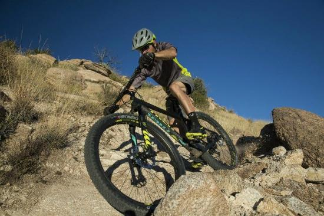
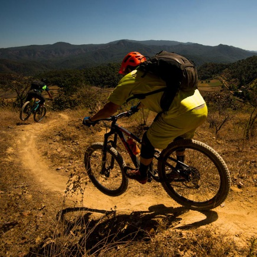

Adventure #1
Are you ready to take on Mother Nature and all it's wonders? She has created some spectacular views for us to see, but you must brave the harsh trails she has set up for us. This is one of our most adventurous trails, as it features rough, narrow passings with 50 foot drops to its side. You need to be a brave soul to take on this challenge. Are you brave enough?
Adventure #1 Details
Length: 10 milesSkill Level Required: Intermidiate - Expert
Location: Andreatic Mountain Trail
Cost: $75
<< Click here to join us >>
Today's Weather
Condition:Temperature:
High:
Low:
Adventure #2
This course is a great way to build and maintain your adventerous biking skills. Join us four a nice day out on the trails in no-mans land. Enjoy the scenery as we take you through some of the areas untamed roads. You will be challenged with the twist and turns this trail provides. No need to be an expert to enjoy Mother Nature's wonders. Our guides will take you through some exciting trails that will build up your biking skills. Plenty of water is recommended for this adventure.
Adventure #2 Details
Length: 10 milesSkill Level Required: Beginner - Intermediate
Location: Baltric Mountain Trail
Cost: $40
<< Click here to join us >>